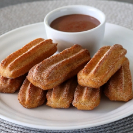

Baked Churro Bites

Serve with hot chocolate, or dipped in a chocolate sauce.
Recipe by Chef John
★★★★☆ 4.4 Stars
Prep Time: 30 mins - Cook Time: 40 mins - Cool Time: 10 mins
Servings: - 30 Yield: 10 churro bites
Ingredients
- 1 1/4 cups water
- 5 tablespoons cold unsalted butter
- 2 packed tablespoons brown sugar
- 1/2 teaspoon salt
- 1 1/4 cups all-purpose flour
- 1 teaspoon vanilla extract
- 2 large eggs
- 2 tablespoons melted butter for brushing on before sugaring
- cooking spray
Directions
- Combine water, butter, brown sugar, and salt in a saucepan over medium heat and bring to a simmer.
Add flour all at once and cook, stirring, until a soft, sticky dough ball forms,
and a starchy film coats the bottom of the pan, about 5 minutes.
-
Continue cooking for about 1 minute more, scraping the film off the bottom of the pan as you stir.
You won't have a clean bottom surface, but some will be reabsorbed by the dough.
- Transfer to a bowl and let cool for 10 minutes.
-
Add in vanilla extract and eggs, 1 at a time, and mix in using a spatula.
The mixture will separate at first, but eventually it will smear together into a sticky dough.
-
Preheat the oven to 425 degrees F (220 degrees C). Line 2 baking sheets with silpat mats or parchment paper.
-
Transfer dough into a pastry bag fitted with a star tip (I used a number 356 tip).
Pipe out 3 to 4 inch ropes onto the prepared baking sheets, spaced a few inches apart.
Use the back of a knife to “cut” through dough at the end of each piping, to get a clean end.
Since this makes 28 to 30 bite-sized churros, pipe 14 to 15 onto each baking sheet.
-
Once piped, spray tops of the churros with vegetable oil spray, and then spray water generously all over the pan.
-
Bake in the preheated oven until churros are puffed and the edges are browned, 20 to 25 minutes.
Turn off the oven, and open the door for about 10 seconds to vent heat.
Close the door, leaving it open about 8 to 12 inches, and let churros rest in the oven for 10 minutes.
-
Remove from the oven, and working in batches of 6 at a time,
brush them lightly with melted butter, and then toss to coat in a bag of cinnamon sugar.
→ Link to recipe
website source. ←